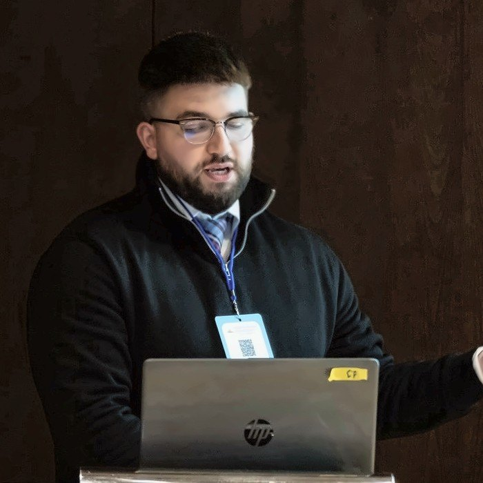

Open to
- Media interviewsPrint, broadcast and online, on drones, air taxis, heat pumps, electric vehicles and environmental noise.
- Podcasts and radioLong-form conversations about sound, perception and the future soundscape of towns and cities.
- Press statements and expert commentQuick, accurate comment on new noise policy, research findings and emerging technology.
- Research collaborationJoint studies, listening experiments, datasets and papers with academic and industry partners.
- Talks and guest lecturesConferences, seminars, schools and public engagement events.
- InternshipsResearch and industry internships in acoustics, psychoacoustics and machine learning.
Topics I can speak on
- Drone and eVTOL Noise
- ASHP Noise
- Electric Vehicle Warning Sounds
- Noise and Health
- Psychoacoustics
- Machine Learning for Acoustics
Contact
For press and time-sensitive requests, please include your deadline.
Press Kit
Available for comment on drone, air taxi, heat pump and electric-vehicle noise, and on how sound affects health and wellbeing. In person in Glasgow or remotely.



How to credit me
Max Ellis, PhD researcher in psychoacoustics, University of Salford
Short bio 42 words
Max Ellis is a Defra-funded PhD researcher in psychoacoustics at the University of Salford. He studies how people will hear the new sounds of Net Zero (delivery drones, air taxis, heat pumps and electric-vehicle warning sounds) before they arrive in our streets.
Full bio 138 words
Max Ellis is a psychoacoustics researcher based in Glasgow and a Defra-funded PhD candidate at the University of Salford’s Acoustics Innovation Institute. His research recreates future soundscapes, with delivery drones, air taxis, heat pumps and electric-vehicle warning sounds added to real places, and plays them to listening panels. Machine learning models trained on those responses predict who will be annoyed, by how much and why, giving regulators evidence to set standards and engineers a target for quieter machines. He came to acoustics through music, recording and mixing bands before studying music technology, sound for film and artificial intelligence. He teaches at the University of Salford, the University of the West of Scotland and St Mary’s University, London, and is a member of the NASA Unmanned Aircraft Systems Noise Working Group and the Institute of Acoustics Scottish Branch committee.